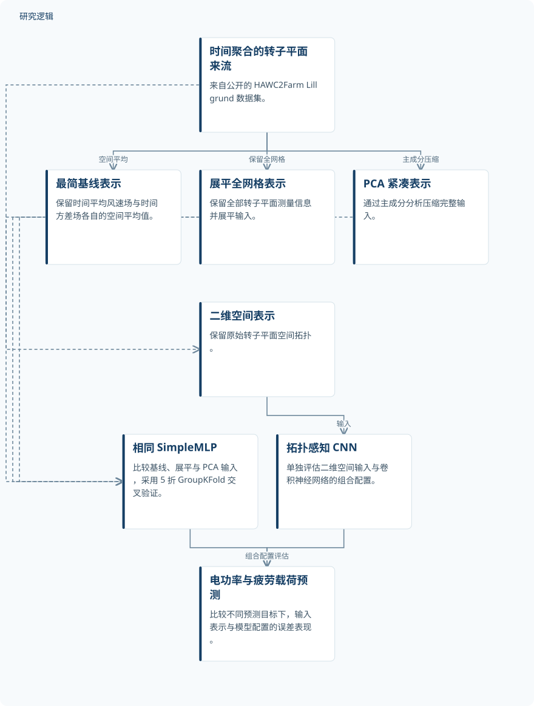

摘要解读
海上风电场流场表征对电功率与疲劳载荷代理建模的影响
The influence of flow-field representation on electrical power and fatigue-load surrogate modelling in offshore wind farms
解读更新 2026-11-10 10:40 · 依据公开摘要整理，未核验全文细节
预测海上风电场的电功率与疲劳载荷，转子平面的来流信息究竟需要保留多少？这项研究比较不同输入表示与模型配置，揭示功率预测和疲劳载荷预测对空间信息的需求并不相同。
文章目录
来流保留多少信息，才能支撑有效预测？
高保真气动弹性仿真能够准确预测风电场电功率和结构疲劳载荷，但其计算成本制约了优化、控制及数字孪生应用。机器学习代理模型提供了高效替代途径，然而，预测表现不仅取决于模型架构，也受到来流表示方式的影响。
本文关注的是一个具体问题：将转子平面来流压缩为空间平均值，会损失多少预测信息？保留完整空间分布、提取主成分或维持二维拓扑，对不同预测目标是否具有相同价值？
四种输入表示，两类模型比较
研究采用公开的 HAWC2Farm Lillgrund 数据集，从时间聚合后的转子平面来流构建四种输入：仅保留时间平均风速场和时间方差场各自空间平均值的基线表示；保留全部测点的展平网格表示；通过主成分分析（PCA）压缩的表示；以及保留原始转子平面拓扑的二维表示。
基线、展平和 PCA 输入使用相同的 SimpleMLP 架构，在 5 折 GroupKFold 交叉验证下比较。二维输入则单独搭配卷积神经网络（CNN），作为能够利用空间拓扑的建模配置。因此，这两类比较需要区分：前者固定架构，后者同时涉及输入表示与模型架构的变化。
依据摘要整理的来流表示与模型比较示意


仅概括摘要明确的输入、模型及预测目标关系；这是摘要整理示意，不是论文原图。
下载 SVG图示关系说明
实线表示相邻阶段的信息流，虚线表示跨阶段联系或反馈。
时间聚合的转子平面来流 → 空间平均基线：提取空间平均值；时间聚合的转子平面来流 → 展平全网格：保留完整网格；时间聚合的转子平面来流 → PCA 紧凑表示：主成分压缩；时间聚合的转子平面来流 → 二维空间表示：保留二维拓扑；空间平均基线 → 相同 SimpleMLP 架构：基线输入；展平全网格 → 相同 SimpleMLP 架构：展平输入；PCA 紧凑表示 → 相同 SimpleMLP 架构：压缩输入；二维空间表示 → 拓扑感知 CNN 配置：二维输入；相同 SimpleMLP 架构 → 电功率与疲劳载荷预测：评估预测误差；拓扑感知 CNN 配置 → 电功率与疲劳载荷预测：评估预测误差
功率可高度压缩，疲劳预测更依赖载荷通道
对于电功率预测，仅含两个变量的基线已保留大部分预测信息，均方根误差（RMSE）约为额定功率的 2.2%；分布式表示仍可进一步降低绝对预测误差。在固定架构比较中，PCA 表示取得最高的功率预测精度，同时将输入从 1800 个变量压缩为 128 个主成分。
对于疲劳载荷预测，分布式来流信息的作用明显依赖载荷通道：塔基前后向弯曲的差异较小，叶根摆振弯曲和主轴承弯曲的差异则大得多。保留拓扑的 CNN 配置在全部 12 个疲劳载荷分量上取得最低预测误差。最有效的表示与架构组合取决于预测目标，而非存在统一赢家。
摘要尚不能界定泛化与比较边界
仅凭摘要，无法判断样本规模、工况覆盖、GroupKFold 的分组依据，以及是否开展跨风场或独立数据验证；这些属于当前资料未报告的信息，不代表论文没有开展相关工作。摘要也未给出各配置的完整误差与不确定性，不能据此量化全部改进幅度。
CNN 的结果来自二维表示与网络架构共同组成的配置，不能单独归因为空间拓扑。摘要提出的优化、控制和数字孪生属于应用背景，尚不能据此认定已经完成实际部署或运维效果验证。
阅读启发：先明确预测对象，再讨论输入复杂度
阅读启发：面向智能运维与疲劳评估，值得进一步阅读各载荷通道为何对来流分布表现出不同敏感性，以及论文如何控制输入表示与模型架构的比较边界。功率预测中的压缩效果不能直接推广到疲劳载荷，更不能直接等同于疲劳寿命或可靠性预测能力。
以上为本站阅读启发与建议，不是论文已验证的结论。